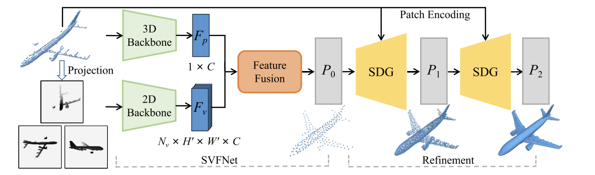
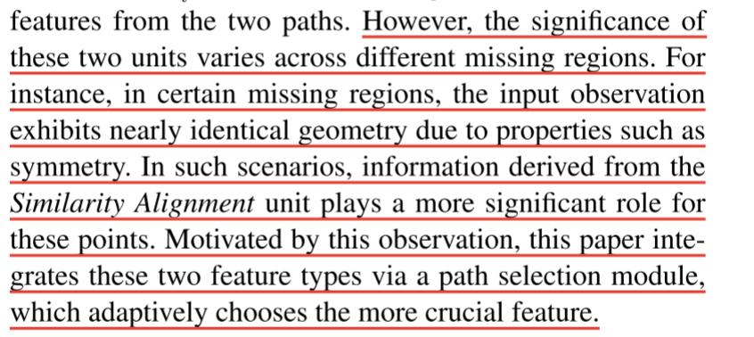
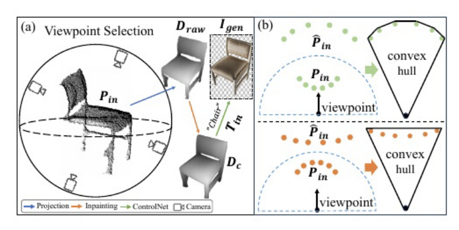
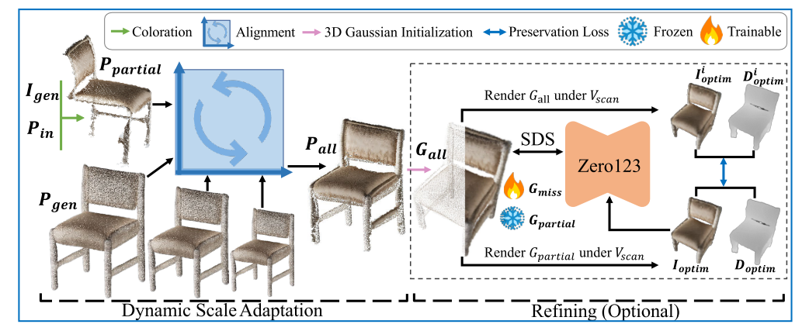

3D 点云补全方法
SVDFormer_PointSea [IJCV 2025]

3 Step：
1.不完全点云通过投影，获得了类似于三视图的深度图像。
2.三维点云通过三个集合抽象层的 PointNet++ 获取三维点云特征\(F_P\)，三视图通过一个基于ResNet-18的网络获得三视图特征\(F_v\)，将两个特征通过FeatureFusion，获取一个基础的点云骨架。
FeatureFusion的pipeline为：

其中，\(f_{Vi}\)作为第一个自注意力机制的输入，原文提到是patch-wise feature，通过第一次最大池化获得优化后的三视图图像的特征，随后和SVDFormer相同。又通过了一个自注意力机制，去强化第一个自注意力机制强化后的图像特征，最后输出的\(F^{'}_v\)通过最大池化层，并继续点云特征\(F_P\)关联，最后通过解码，获得完整的稀疏点云\(P_0\)。
3.SDG的pipeline

分为上下两层，上层为结构分析，下层为相似度对齐，使得\(P_{in}\)与\(P_{i-1}\)得到组合特征\(F_l\)，包含源自学习的形状先验，与从 Pin 中找到的类似几何模式中学习得到的。通过O1再获取一层偏移量，加到\(P_{i-1}\)中，生成新一轮的基础模型。重复两次。
与SVDFormer不同的是，加入了Selection模块，目的是原来是直接将两个拼接起来，但是：

然而，在不同的缺失区域，这两个单元的重要性也不尽相同。例如，在某些缺失区域，由于对称性等特性，输入观测点的几何形状几乎完全相同。在这种情况下，"相似性对齐 "单元中的信息对这些点的作用更大。受此启发，本文通过路径选择模块整合了这两种特征类型，并自适应地选择了更为关键的特征。
GenPC [CVPR 2025]

Depth Prompting

在恢复为\(D_{raw}\)时，作者对点云采样时选择了订点采样，并使用了B的隐点去除策略，选择了convex hull上点最多的视角如Draw。随后，在获得\(D_{raw}\)后，使用了一个基于Diffusion的预训练2D补全模型，对\(D_{raw}\)进行了inpainting，获得\(D_{c}\),随后使用ControlNet进行了图像生成。
3D Generative Model
image-to-3D
Geometric Preserving Fusion

通过调整Pgen的缩放尺度，不断与Ppartical进行ICP，对齐结果生成Pall，但其实是要区分Ppartical和Pmiss部分的。
随后将二者分别初始化为3DGS，partical不训练，miss训练，通过计算partical在Vscan视角下render的RGB和Depth通过补全模型Zero123的生成图与Gall的SDS损失，对miss部分进行优化；随后为了降低对partical部分的改动，又加入了一个Gall和Gpartical之间的MSE损失计算。
GaussianAnything [ICLR 2025]

1.训练目标
1）训练Encoder，使输入的RGB-D-N图像对应到Point Cloud Latent
2）一个条件级联的transformer去噪器，在给定条件与步长的情况下对latent noise去噪
3）一个Decoder用于将Point Cloud Latent 还原到3DGS